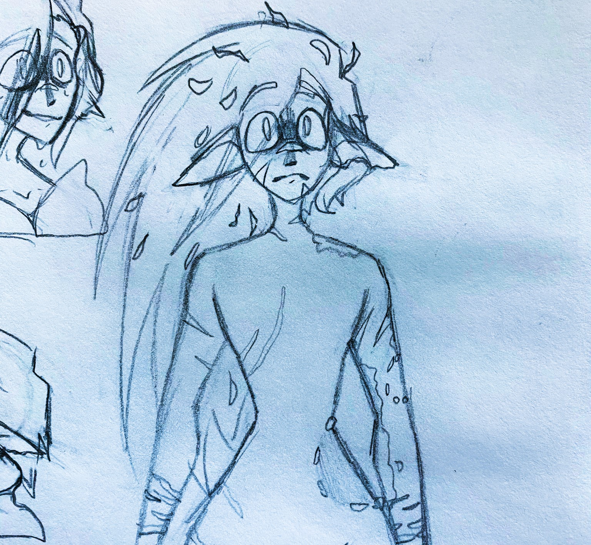
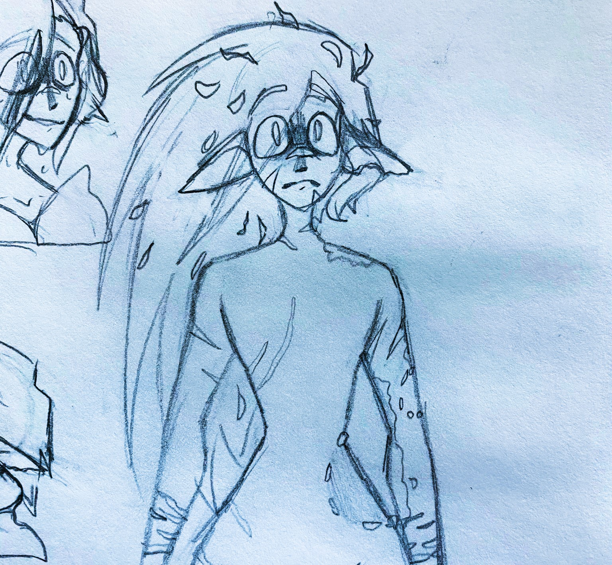
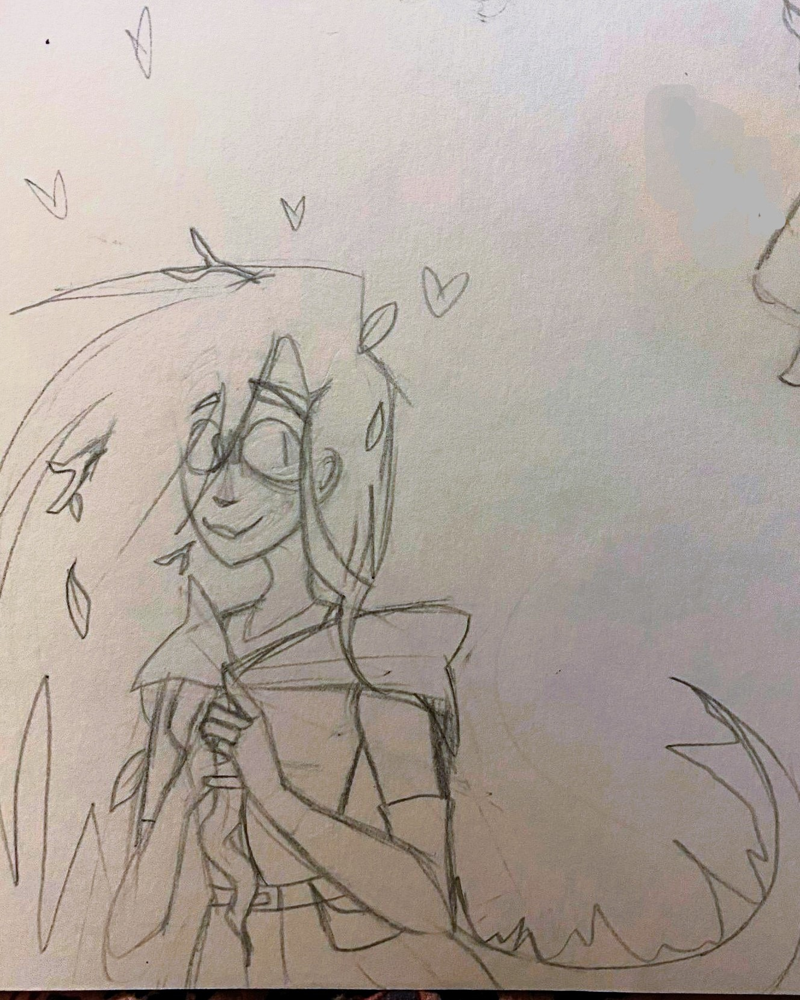
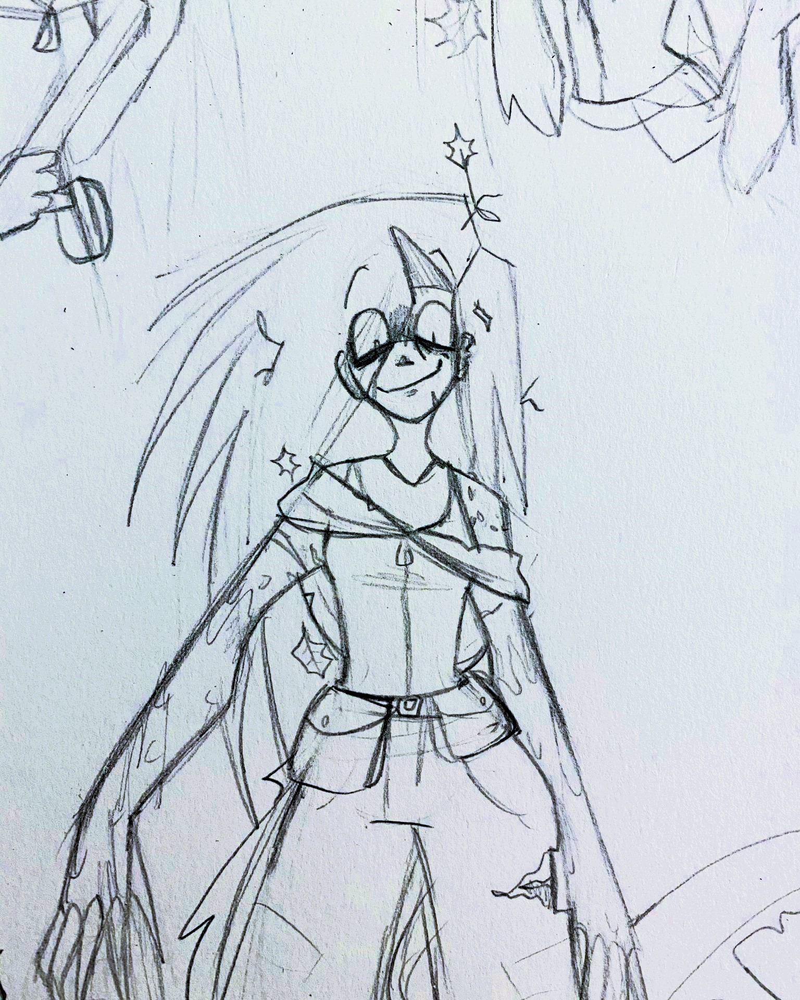
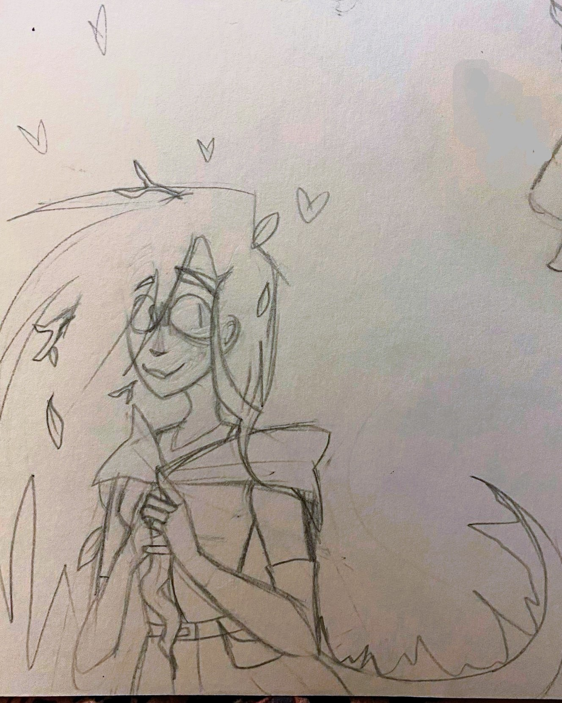
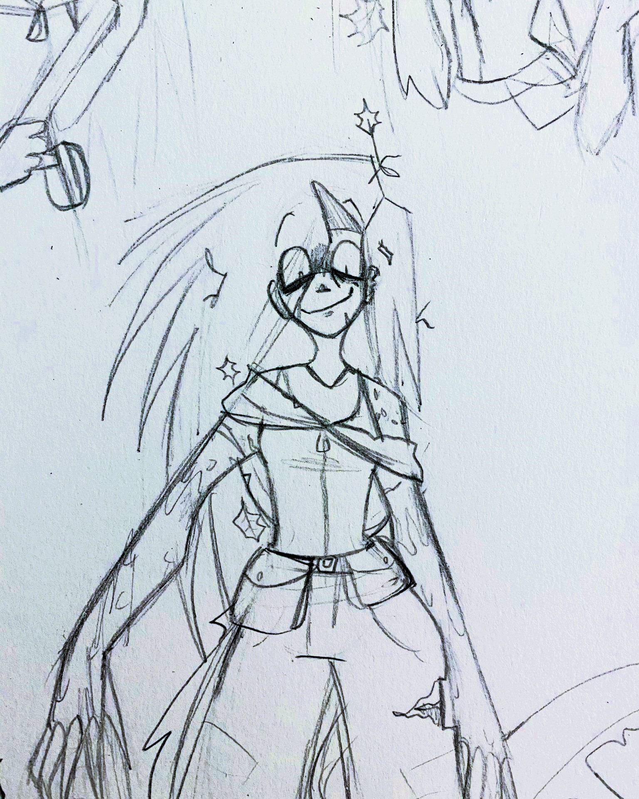

Snapple - Half-Elf - Female - 126 Years Old - Druid
Strength: 17
Dexterity: 14
Constitution: 12
Intelligence: 7
Wisdom: 11
Charisma: 9

Born to a family of humble turtle farmers, Serena "Snapple" Kinette had never once questioned her bloodline, not even when her many siblings were born with rounded ears, not even when it became quite clear as they aged that she was nothing like them. As the eldest, she loved and supported them without a care, a difference in breed meant nothing to her. Her mother's confession that, before meeting the man she knew to be her father, there was an Elven noble that sired Snapple was certainly an uncomfortable revelation, but ultimately, it changed nothing. It was at the age of seven years that the child earned her nickname, having lost her left pinky to a snapping turtle named Clarence and subsequently bonding through blood with the thing, and it was then she knew she was meant to be a druid. At nineteen, the land she lived upon was brought under the rule of a group of ruffians, and things started dying off, dropping property and export values drastically. As this negatively affected her family, she set off to combat this group alongside Clarence. Migrating from group to group, balance was restored to the land, and while her quest was now finished, Snapple loved adventuring so much that she decided she would continue to travel and complete commissions to continue sending money back to her family. As time passed, letters became more sparse, but it was fine. She was happy to keep improving her homeland little by little. It was only on her twenty-sixth birthday that she finally returned home, excited to see her family again, but things had changed. She couldn't recognize a single individual, not specifically at least. Features were familiar, yes, but... she didn't know these members of her family. It was at this time that Snapple realized that she really should have considered the difference between herself and her siblings. It hasn't been nearly a decade since the last time she saw her family.
It's been more than a century.
 

Snapple has never been known for her intelligence, and she is perfectly fine with that. Sweet and overly compassionate by nature, one would think the fool to be harmless, but the only thing as big as her heart is her capacity for violence. This isn't helped at all by the fact that her massive snapping turtle familiar is horribly temperamental, preferring to bite first and think later. Combative impulses aside, Snapple works quite well as an extremely annoying companion to whatever group is so unfortunate as to catch her attention. Wandering the lands, she is simply searching for new meaning in life, continuing to form attachments that will not last. She tries not to think about it too much. She will gladly fall in love with whatever sentient monster you're fighting :)


 


